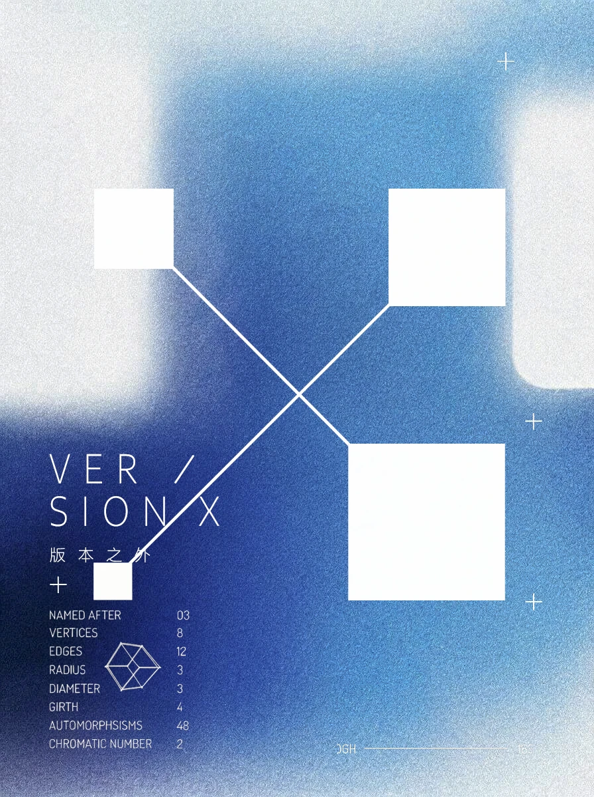

浙江大学未来学习中心
每件作品都有一个当前版本。沿着它的迭代往回看，最初的问题、试过的办法和暂时搁置的想法，都是展览的一部分。
一件作品摆上展台时，往往只剩下最后的样子。那些拆掉重装的零件、画到一半放弃的草图，还有一句让团队改了方向的追问，去了哪里？
欢迎来到「版本之外」。从这面玻璃向里走，听四个团队讲讲，眼前这个版本是怎样发生的。
版本之外
开启 JavaScript 后即可旋转展馆。
悬停预览，点击展区进入团队故事。中央四座蓝色节点展台通往知识图谱。轻点展区或展台的标记查看展签，再点一次进入。